Coconut Carving Festival
The brief was to invent a new city festival and promote it across formats. I chose Sanya, an island city at the southern tip of China known for its coconuts, and designed a festival where people carve coconut shells into any shape or pattern they like.
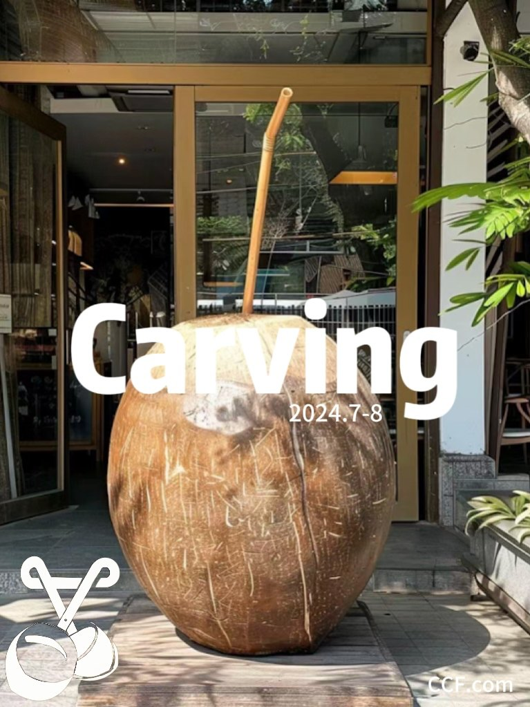
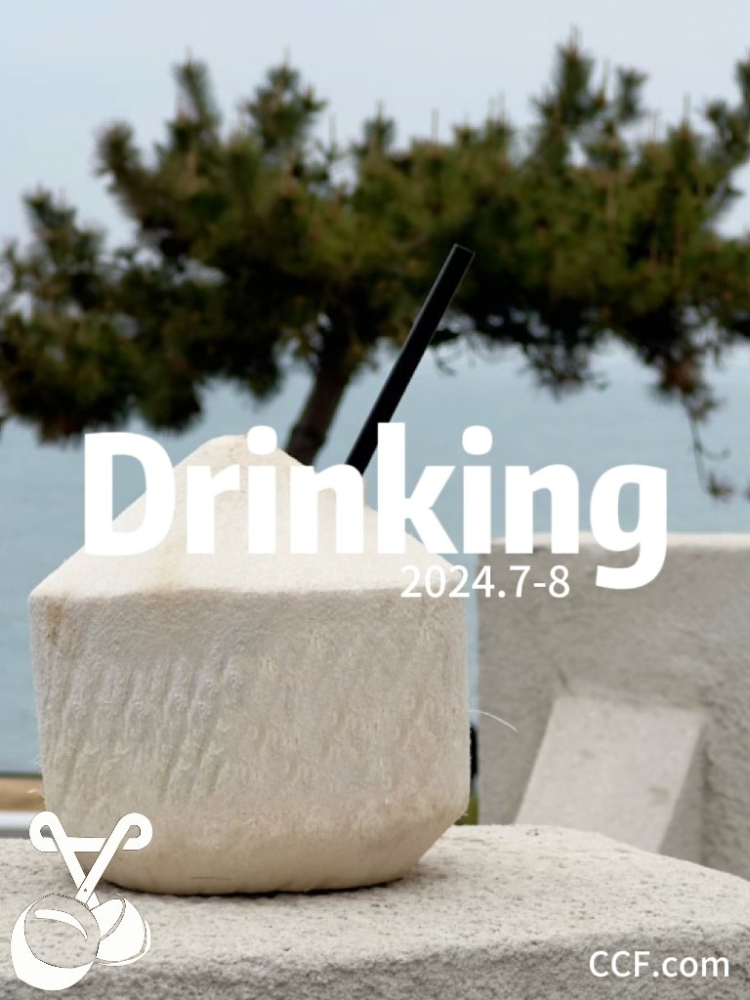
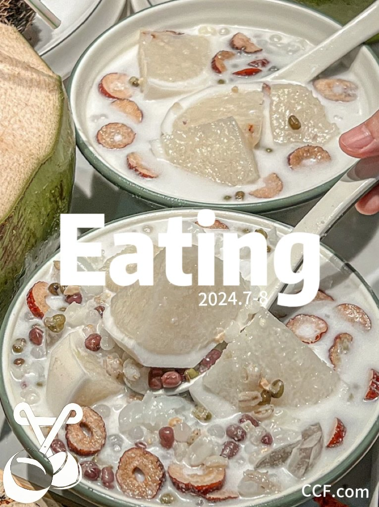
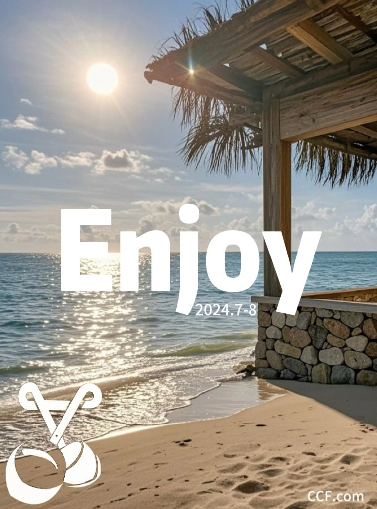
Concept
Sanya has many tropical features, coconuts among them. A coconut is more than a drink: its shell is a material people can create with. The festival invites visitors to carve any shape or pattern they want, so the visual identity aims for a sense of freedom and open possibility. I named it the Coconut Carving Festival so the idea is clear at a glance.
Identity
The logo combines a coconut with a pair of scissors, tying the mark directly to what happens at the festival.
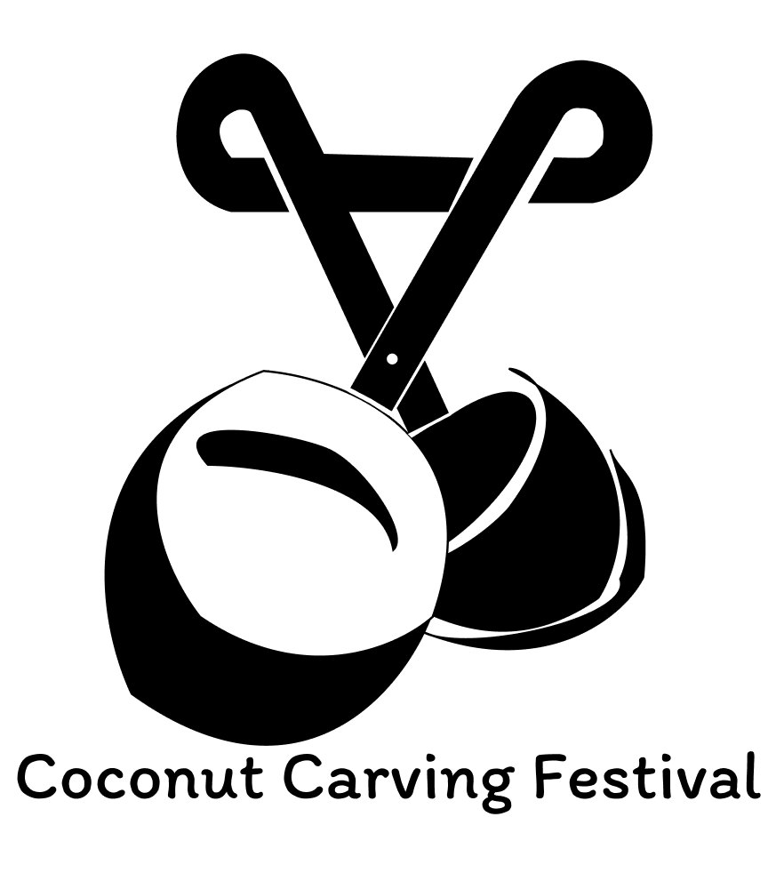
Posters
Four posters, Carving, Drinking, Eating and Enjoy, each show one way to experience the festival. They were designed for billboards and for the festival’s web pages, and prepared for print at 5400 × 7200 px, 300 DPI, in CMYK.
Website
A desktop website design with four pages: Home, Ticket, Activity and About, at 1366 px wide.
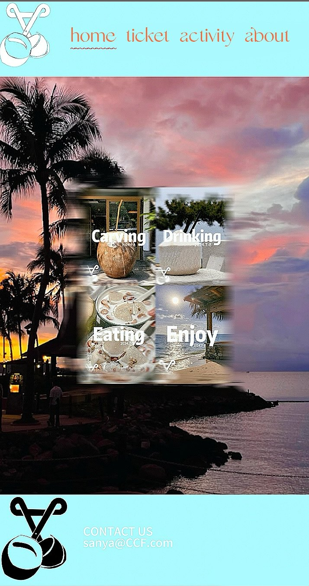
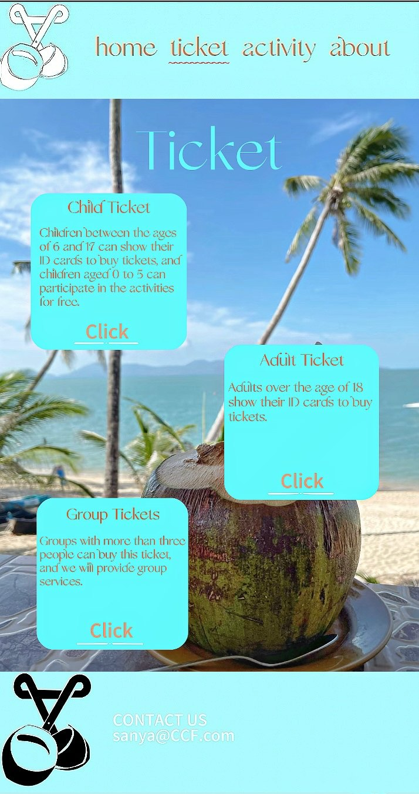
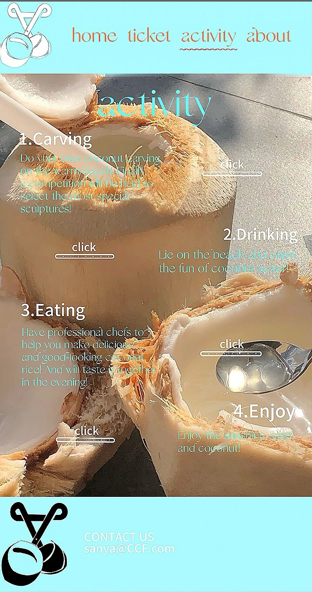
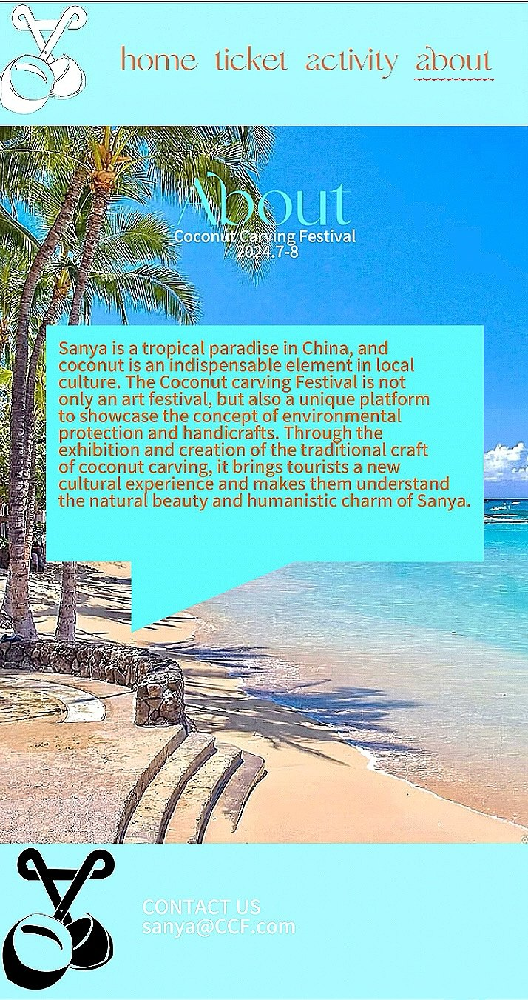
Merchandise
The logo carried onto a tote bag and T-shirts. Each output was saved in the format and resolution its use needs, from RGB for screens to CMYK for print.
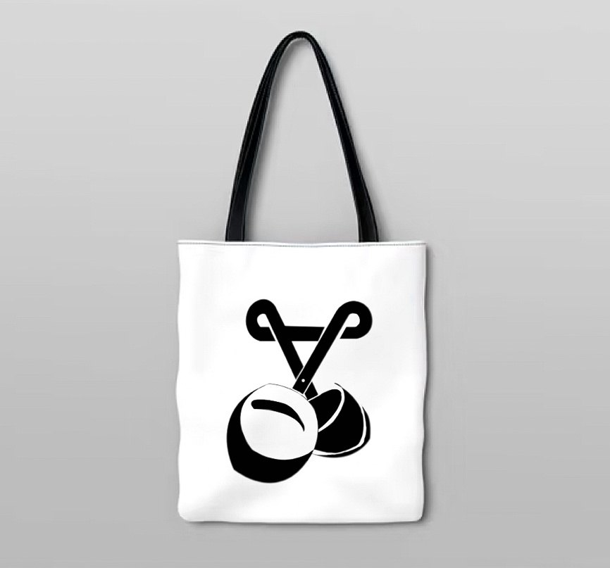
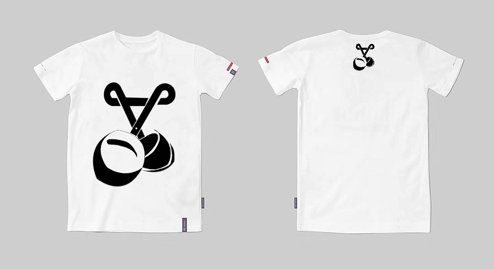